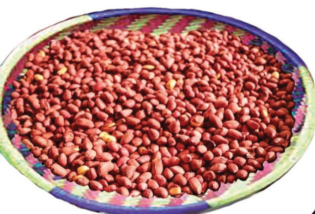

Method
Rinse the groundnuts thoroughly.
Add salt and mix together. Leave it for 15 minutes.
Preheat the frying pan.
Add the groundnuts to the preheated frying pan. Make sure the groundnuts are spread out evenly to ensure even cooking.
Dry-fry the groundnuts in the frying pan, and stir them frequently to avoid burning and achieve even frying. The groundnuts will start releasing a roasted aroma as they cook. The dry-frying process may take 8 to 10 minutes, depending on the heat level, the size of the cooking pan and the amount of groundnuts to be fried.
To check if the groundnuts are well fried, take one out of the pan and leave it to cool slightly. Then, taste it and see if it meets the desired level of crunchiness.
Once the groundnuts are fully dry-fried, remove them from the fire. Transfer them to a clean large open utensil to cool, as shown in Figure 6.10.
Store the dry-fried groundnuts in an air-tight container once they have cooled down to maintain their freshness and crunchiness. Keep them in a cool and dry place for future snacking or use them in preparing various dishes.
